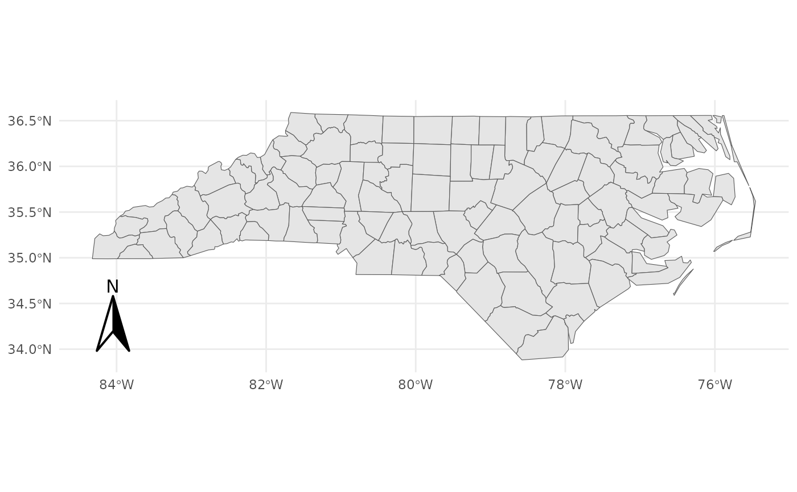
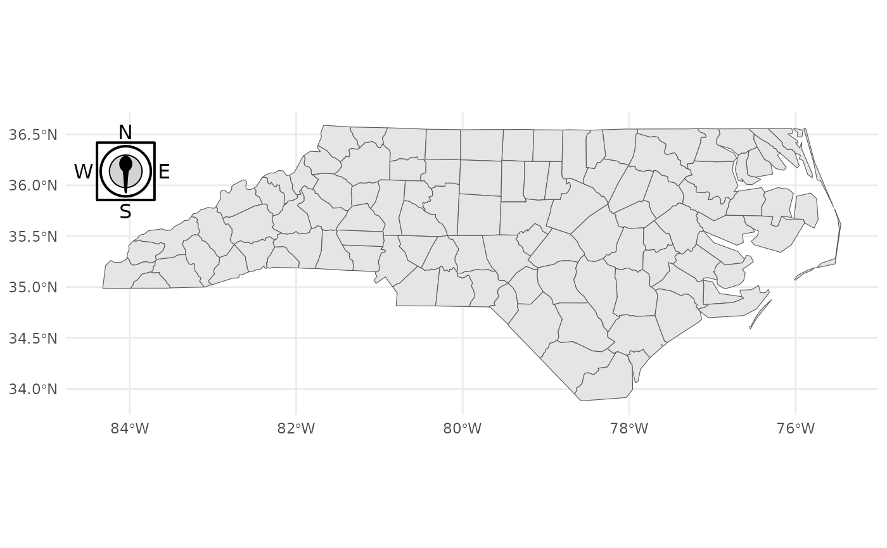
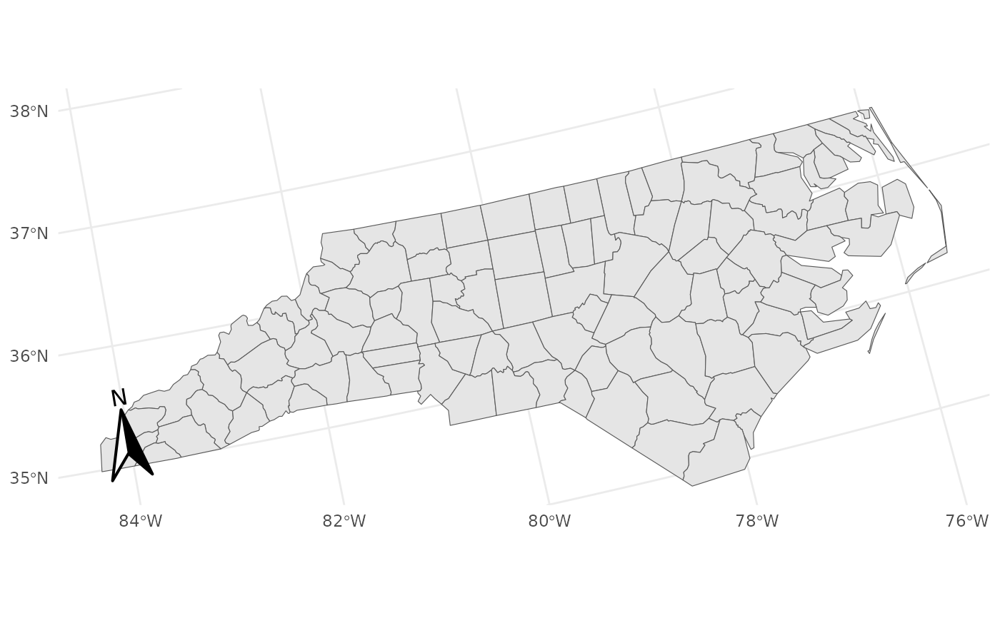

`annotation_compass()` adds a compass (north arrow) to a `ggplot2` map. It can be aligned to **grid north** (top of the plot) or **true north** (geographic north). Styles can be supplied as a grob or a function returning a grob (e.g., `north_arrow_classic()`, `compass_sinan()`).
Usage
annotation_compass(
mapping = NULL,
data = NULL,
...,
location = "bl",
which_north = "grid",
height = unit(1.5, "cm"),
width = unit(1.5, "cm"),
pad_x = unit(0.5, "cm"),
pad_y = unit(0.5, "cm"),
rotation = NULL,
style = north_arrow_classic()
)Arguments
- mapping, data
Standard ggplot2 arguments (typically unused).
- ...
Additional parameters passed to the layer (rarely needed).
- location
Character. One of `"tl"`, `"tr"`, `"bl"`, `"br"` indicating top/bottom + left/right placement. Default: `"bl"`.
- which_north
Character. `"grid"` (default) or `"true"`.
- height, width
`grid::unit`. Compass box dimensions. Defaults: `1.5 cm`.
- pad_x, pad_y
`grid::unit`. Padding from panel edges. Defaults: `0.5 cm`.
- rotation
Numeric. Fixed rotation in degrees (counter-clockwise). When provided, it overrides `"grid"`/`"true"` logic.
- style
A grob, `gList`/`gTree`, or a function returning a grob (e.g., `north_arrow_classic()`). Default: `north_arrow_classic()`.
Details
* `"grid"` north: compass points straight up in the plotting space (no CRS needed). * `"true"` north: compass rotates toward geographic North Pole using the plot CRS. This requires a valid CRS available via `coord_sf()` or injected by setting `layer$geom_params$crs`. * You can override any auto-rotation by providing `rotation` (degrees CCW). * The layer is annotation-like: it draws once per panel using the panel bounds.
Examples
nc <- sf::st_read(system.file("shape/nc.shp", package="sf"), quiet = TRUE)
base <- ggplot2::ggplot() +
ggplot2::geom_sf(data = nc, fill = "grey90") +
ggplot2::theme_minimal()
# Example 1: Grid north (no CRS required), bottom-left
base + annotation_compass()

# Example 2: Custom style & position (top-left)
base + annotation_compass(location = "tl", style = compass_sinan())

# Example 3: True north (requires a CRS)
base +
ggplot2::coord_sf(crs = "+proj=lcc +lon_0=-100 +lat_1=33 +lat_2=45") +
annotation_compass(which_north = "true")
